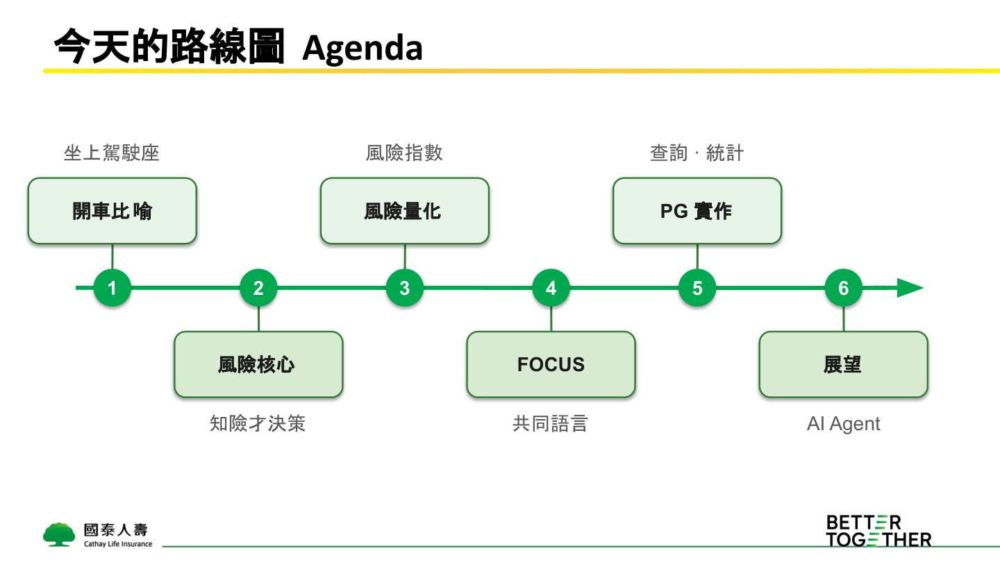
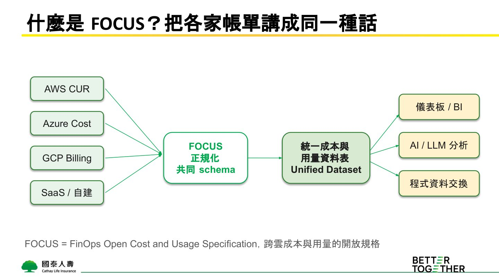
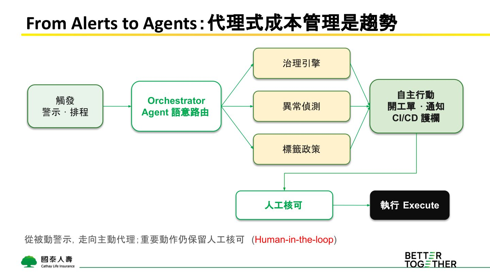
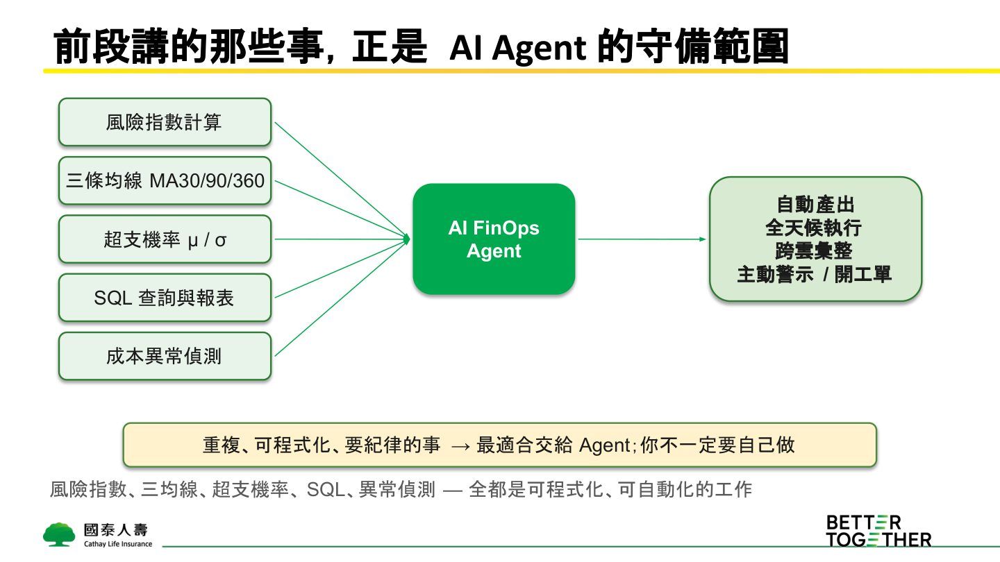

摘要
本演講重新定義 FinOps 的核心價值，指出其不應只是「看後照鏡開車」的被動記帳與成本砍減，而是一場前瞻性的「風險管理」。講者古永忠分享如何將模糊的超支風險具體化與量化。技術上，以跨雲成本開放標準 FOCUS (FinOps Open Cost and Usage Specification) 為底層 Schema，透過 PostgreSQL 視窗函數計算 MA30、MA90 與 MA360 多重移動平均線，藉由均線交叉判定花費趨勢；進一步利用常態分佈公式（結合 μ、σ 及剩餘天數）與 `erf` 函數，精準計算出年底「超支機率」與「風險指數」。演講倡導未來的 FinOps 執行層將由 AI FinOps Agent 主動接管（監控 Terraform 變更與 CloudWatch 流量），而人則專注於「融會貫通、決策取捨、定義安全護欄」的「Human Premium」高價值判斷上。
重點整理
- 風險指數公式 = （已支出金額比例 ÷ 預算時間期程比例）× 預測未來全期費用比例 × 100，等於 100 代表完全 on-track
- 以 MA30/MA90/MA360 三條移動平均線類比股市均線，用黃金交叉/死亡交叉判讀雲端花費升溫或降溫
- 利用 MA30 的平均值與標準差搭配常態分配公式，將「會不會超支」轉換成具體的機率數字
- FOCUS（FinOps Open Cost and Usage Specification）是跨雲成本與用量的開放規格，已演進至 1.4 版並涵蓋 SaaS、合約與 AI token 計價
- FinOpsX 2026 趨勢顯示 From Alerts to Agents，重複可程式化的計算工作應交給 AI Agent，人則專注融會貫通、決策與教好 AI 的 Human Premium
重點圖片／架構圖




FinOps 不是記帳也不是一味省錢
講者破題指出，多數人誤以為 FinOps 是冷靜檢視已發生的帳單、月底對帳砍成本，但實際上 FinOps 更像坐在駕駛座決定「如何往前開」的風險管理工作。FinOps 讓工程、財務、業務用同一套數字對雲端與 AI 花費做出更好的決策，管理範疇涵蓋可見性（花了多少、花在哪）、最佳化（值不值得）與營運（持續決策與當責），若只停留在記帳與省錢，就如同只看後照鏡開車，無法真正引導方向。
風險指數：把模糊感覺變成可比較的數字
本議程核心主張是將風險具體化、量化為「風險指數」，公式為（已支出金額比例 ÷ 預算時間期程比例）乘以預測未來全期費用比例再乘以 100。當已支出比例與時間比例呈線性、預測剛好打平預算時，風險指數等於 100，即完全 on-track；指數低於 100 代表保守或落後、可能投資不足，高於 100 則代表超支風險升高，如同時速表一樣可跨團隊、跨服務比較風險高低。
移動平均與超支機率：借用股市語言解讀花費
講者借用股市均線概念，以 MA30（月線）、MA90（季線）、MA360（年線）分別代表短、中、長期花費趨勢，黃金交叉代表花費加速、超支風險升高的早期警訊，死亡交叉則代表花費降溫。進一步利用 MA30 的平均值 μ 與標準差 σ，搭配常態分配公式計算 z 分數，推算出剩餘期間超出預算的機率，讓「會不會超支」從主觀感覺變成如「72% 機率超出年度預算」的客觀數字。
FOCUS：跨雲帳務的共同語言
FOCUS（FinOps Open Cost and Usage Specification）將 AWS CUR、Azure Cost、GCP Billing 等各家帳單正規化為統一的 schema，不僅用於跨雲對帳，也逐漸延伸為 AI/LLM 的標準輸入格式與 FinOps Agent、MCP Server 的底層語言。規格版本從 2024 年的 1.0（43 個共通欄位）演進至 2026 年的 1.4（新增資料集與 47 欄位，區分 Service/Host Provider），顯示趨勢從單純對帳走向涵蓋 SaaS、合約、AI token 的完整技術價值語言。演講中也展示以 PostgreSQL 依 FOCUS 精神設計帳務 schema，並用 SQL 計算每日花費、服務別 Top N 與風險指數。
From Alerts to Agents 與 Human Premium
講者引用 FinOpsX 2026 大會趨勢，指出產業正從被動警示走向主動代理（Alerts → Agents），風險指數、三均線、超支機率計算、SQL 報表與異常偵測等重複、可程式化的工作最適合交給 AI Agent 全天候執行，人則應專注於「Human Premium」：融會貫通把各項指標串成全局判斷、在風險與價值間做決策取捨、並設定目標與護欄教好 AI。講者更分享在準備簡報同時，讓 AI Agent 同步完成 FOCUS 風格的 focus-demo 開源專案，實際示範人機分工。